Photos from our difficult university life. Also in this section, you can get acquainted with your own eyes and see some interesting personalities, watch student tricks and the like.
| 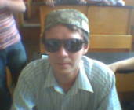 | Uuuu! Madzhahed's erysipelas! And this is before the test in chemistry! Cast: cap, Vitaly Savitsky, glasses. |
| 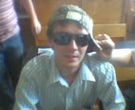 | Do not touch the cap! Who said, do not touch the cap! Cast: glasses, whose hand, Vitaly Savitsky, cap. |
| 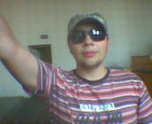 | Zik-hi, chemistry! Zico hi! Said Maksim holding his favorite M16 in his left hand before the test in chemistry ... |
| 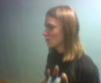 | And this Vova. a.k.a. S. V. Roll. You can see in the English dictionary, "roll" literally translates as "bun". A S.V. -- Hedgehogs and clear that "fresh". So, Vova "breadbasket"! As usual, he puffed up, and tries something anyone to prove. Probably what is already 3 months ago nick succeeded! |
| 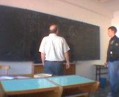 | Physics. Seminar. Instructor - Drobyshevsky Vitaldy Ivanovich. And he vainly trying to get even a drop of knowledge from the student. |
| 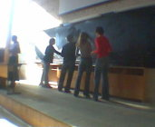 | Yes! Retractable board need! All headmen from our flow thoroughly clean the blackboard. Of them - 3 girls. This is almost half of girls from all over our flow |
| 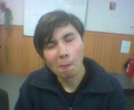 | Bigi a.k.a. Dubovik Alexander. Real face. |
| 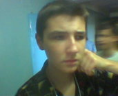 | Jok3r a.k.a. Redchenkov Alexander. Anyone torn mental process. Dahan, a student, and yes even trying to think ... |
| 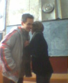 | Compromising on Goncharov Vitalik (known in criminal circles as "Santi") and Vorobjeva Julia. Julia, Well, I say that this is not blackmail, but merely put in internet photo! � |
| 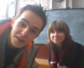 | Again, Goncharov and Vorobjeva. Something too much time they spend together ... Christ, in my opinion, they noticed a hidden camera!! |
| 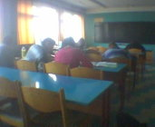 |
And this process of making labs in physics at 1 course. According to bend spinal show how hard students work ... Yes, indeed, if this pair does not do homework on chemistry (which, of course, before that no one in the eye and not seen), then at the next pair (chemistry) lecturer in chemistry will all be severely ... |
| 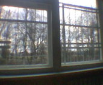 | And this my symbol of our University - tightly slatted window, which is visible from radiation bald trees ... In this audience awful things happen. Seminars on higher mathematics and history of Belarus, for example ... Many tried to jump in the window at these seminars. But it was for this grill ... : ( |
| 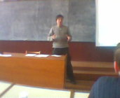 | You saw the conference live. Even Alexander himself advised to take photographs as much as possible, so that the people could also laugh wildly |
| 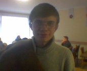 | And this Vasya (Devigerro) in stolovke: - Ummmm. What to eat it? Oh what a girl! How beautiful! This tasty! " alt="]:->" /> � |
| 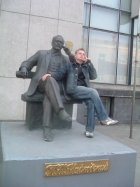 | Guess who's among them Chekhov? But not guessed - is Tchaikovsky! Cast: Paul Pekun, Peter Ilich Tchaikovsky |